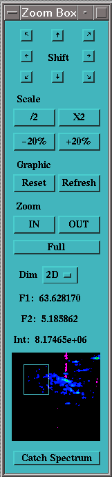

A
control box (Shown here) should also appear at start-up in the upper
right corner of the screen. This box holds controls which permits to
zoom and adjust the scale of the display. (If this box disappears, or
is absent for any reason, you can make it appear again with the ZM
command (also in the Display menu)).
There are many ways
for selecting a zoom window in Gifa. Apart from the direct command
ZOOM (see this command), you can simply
click on the graphic window with the left and middle buttons pressed
at the same time (or Shift+left button), and draw a rectangle on the
display. You can redraw as many time as wished this rectangle. Zoom
into the selected region, simply by clicking in the window with the
left and right button of the mouse (or Shift+right button). You can
also use the Zoom in and Zoom out buttons in the
control box. Of course the Full button resets to the full
spectral view.
Here is a summary of the possible actions.
|
|
Mouse |
Shift + |
|
Draw Selection |
left + middle |
left |
|
Zoom in |
left+right |
right |
|
Zoom out |
middle+right |
middle |
The control box holds a miniature
spectrum of your 2D data-set, it was displayed when you clicked on
the Catch Spectrum button. The white rectangle in it, shows
the current zoom region. You can also move around the little zoom box
in this window with your mouse, and the zoom will move accordingly.
The 8 little arrows on the top of the zoom box can be used to
move around the zoom region. Each arrow will move the selected region
by half the size of the zoom box.
There are five controls to
adjust the vertical scale used for displaying the spectra. The Reset
button will reset the display to the default, (ABSMAX
0 SCALE 1) where the largest peak in the screen in full
size. The four other buttons permit to modify the scale value,
raising or lowering the SCALE context by factor of 2 and of 1.2. See
below for more details on SCALE.
The refresh button redraw the spectrum on screen, without
changing the settings.
The pop-up menu Dim, can be used to
rapidly switch between the 3 working buffers : 1D, 2D and 3D.